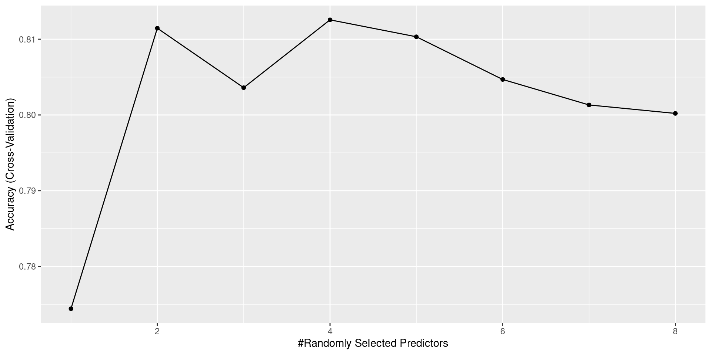
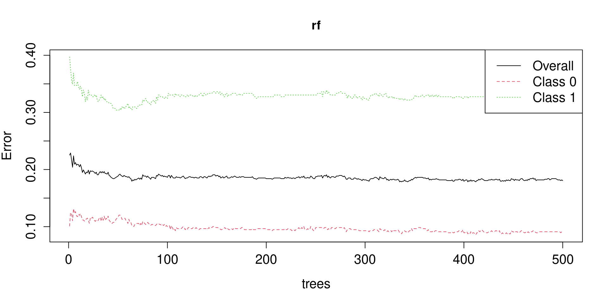

library(tidyverse)
library(keras)
library(mlbench)
library(mgcv)
library(tensorflow)
library(caret)
library(randomForest)
library(randomForestExplainer)
library(rpart)
library(rpart.plot)
library(plotROC)
#install_tensorflow() #run this the first time you use tensorflow
source("../code/routines.R")Modern Statistical Computing
09. Non-linear models
David Rossell
Pompeu Fabra University
Reproducing these lecture notes
Load required R packages
Non-linear models
In some applications it can be critical to capture non-linear effects. We already saw two basic strategies
Add quadratic / polynomial terms \(x_{ij}^2, x_{ij}^3, \ldots\)
Discretize \(x_{ij}\) into several groups
More refined strategies (e.g. used by ggplot)
Additive regression
Deep learning
Regression trees / random forests
…
Generalized additive models
Additive linear regression. \(y_i \sim N(\mu_i, \sigma^2)\),
\[ y_i = \sum_{j=1}^p f_j(x_{ij}) + \epsilon_i= \mu_i + \epsilon_i \]
Additive logistic regression. \(y_i \sim \mbox{Bern}(\mu_i)\)
\[ \log \left( \frac{\mu_i}{1 - \mu_i} \right) = \sum_{j=1}^p f_j(x_{ij}) \]
Additive Poisson regression. \(y_i \sim \mbox{Poisson}(\mu_i)\)
\[ \log \mu_i = \sum_{j=1}^p f_j(x_{ij}) \]
Example
GAMs can be fitted with function gam (package mgcv)
Family: gaussian
Link function: identity
Formula:
y ~ s(x)
Parametric coefficients:
Estimate Std. Error t value Pr(>|t|)
(Intercept) 0.001385 0.022945 0.06 0.952
Approximate significance of smooth terms:
edf Ref.df F p-value
s(x) 5.811 6.968 125.7 <2e-16 ***
---
Signif. codes: 0 '***' 0.001 '**' 0.01 '*' 0.05 '.' 0.1 ' ' 1
R-sq.(adj) = 0.948 Deviance explained = 95.4%
GCV = 0.030474 Scale est. = 0.026323 n = 50Additive models via basis functions
Idea: transform \(x_{ij} \in \mathbb{R}\) into vector \(w_j(x_{ij}) \in \mathbb{R}^L\). Let
\[ \sum_{j=1}^p f_j(x_{ij})= \sum_{j=1}^p w_j(x_{ij})^T \beta_j \]
Examples.
Quadratic terms. \(w_j(x_{ij})^T= (x_{ij}, x_{ij}^2)\)
Discretize into \(K\) groups. \(w_j(x_{ij})^T= (0,\ldots,0,1,0,\ldots,0)\) (1 indicates \(x_{ij}\)’s group)
More advanced examples: splines, Fourier basis etc.
Splines
Def. Let \(x \in \mathbb{R}\). \(f(x)\) is a spline of degree \(d\) and knots \(\nu_1 < \ldots < \nu_K\) iff
\(f(x)\) is a degree \(d\) polynomial in each interval \((\nu_k,\nu_{k+1})\)
\(f(x)\) has \(d-1\) continuous derivatives at \(\nu_1,\ldots,\nu_K\)
It’s easy to obtain splines. Consider \[f(x)= \sum_{l=1}^L w_l(x) \beta_l\] where \(w_l\)’s are degree \(d\) polynomials and \(\beta_l\)’s satisfy certain restrictions, ensuring that \(f(x)\) has \(d-1\) continuous derivatives
Example. Degree 1 B-splines
\[f(x)= w_1(x) + 1.1 w_2(x) +1.5 w_3(x) + 1.6 w_4(x)\]
B-splines: minimal support & guarantee \(d-1\) continuous derivatives


Model fitting
Since \(\sum_{j=1}^p f_j(x_{ij})= \sum_{j=1}^p w_j(x_{ij})^T \beta_j\), we can write \[ y= W \beta + \epsilon \] where \(y, \epsilon \in \mathbb{R}^n\), \(W\) contains all the \(w_j(x_{ij})\)’s and \(\beta^T= (\beta_1^T,\ldots,\beta_p^T) \in \mathbb{R}^{pL}\)
A standard linear regression model!
In principle, we could use least-squares
Many parameters (\(pL\)), use generalized cross-validation to avoid over-fitting
GCV is a computationally faster alternative to cross-validation
Example. Diamonds data

Family: gaussian
Link function: identity
Formula:
lprice ~ lcarat + cut + color + clarity
Parametric coefficients:
Estimate Std. Error t value Pr(>|t|)
(Intercept) 12.200915 0.001685 7242.225 < 2e-16 ***
lcarat 1.883718 0.001129 1668.750 < 2e-16 ***
cut.L 0.174154 0.003396 51.284 < 2e-16 ***
cut.Q -0.050660 0.002989 -16.950 < 2e-16 ***
cut.C 0.019446 0.002595 7.494 6.77e-14 ***
cut^4 -0.002253 0.002079 -1.084 0.278
color.L -0.634174 0.002925 -216.828 < 2e-16 ***
color.Q -0.137955 0.002687 -51.335 < 2e-16 ***
color.C -0.021328 0.002515 -8.481 < 2e-16 ***
color^4 0.017098 0.002310 7.403 1.35e-13 ***
color^5 -0.003176 0.002182 -1.455 0.146
color^6 0.003450 0.001984 1.739 0.082 .
clarity.L 1.322709 0.005161 256.274 < 2e-16 ***
clarity.Q -0.350630 0.004804 -72.982 < 2e-16 ***
clarity.C 0.191013 0.004118 46.387 < 2e-16 ***
clarity^4 -0.095368 0.003294 -28.955 < 2e-16 ***
clarity^5 0.039556 0.002689 14.711 < 2e-16 ***
clarity^6 -0.002624 0.002342 -1.120 0.263
clarity^7 0.048375 0.002066 23.412 < 2e-16 ***
---
Signif. codes: 0 '***' 0.001 '**' 0.01 '*' 0.05 '.' 0.1 ' ' 1
R-sq.(adj) = 0.983 Deviance explained = 98.3%
GCV = 0.037276 Scale est. = 0.037263 n = 53940
Family: gaussian
Link function: identity
Formula:
lprice ~ s(lcarat) + cut + color + clarity
Parametric coefficients:
Estimate Std. Error t value Pr(>|t|)
(Intercept) 11.1263100 0.0014896 7469.083 < 2e-16 ***
cut.L 0.1797522 0.0031861 56.417 < 2e-16 ***
cut.Q -0.0404047 0.0027906 -14.479 < 2e-16 ***
cut.C 0.0202179 0.0024197 8.356 < 2e-16 ***
cut^4 -0.0051165 0.0019430 -2.633 0.00846 **
color.L -0.6361920 0.0027690 -229.758 < 2e-16 ***
color.Q -0.1277001 0.0025152 -50.772 < 2e-16 ***
color.C -0.0168863 0.0023476 -7.193 6.42e-13 ***
color^4 0.0181295 0.0021555 8.411 < 2e-16 ***
color^5 -0.0059855 0.0020348 -2.942 0.00327 **
color^6 -0.0008307 0.0018500 -0.449 0.65342
clarity.L 1.3022965 0.0048406 269.037 < 2e-16 ***
clarity.Q -0.3480982 0.0045205 -77.004 < 2e-16 ***
clarity.C 0.1863394 0.0038713 48.134 < 2e-16 ***
clarity^4 -0.0827827 0.0030855 -26.830 < 2e-16 ***
clarity^5 0.0335497 0.0025108 13.362 < 2e-16 ***
clarity^6 -0.0037246 0.0021854 -1.704 0.08833 .
clarity^7 0.0432087 0.0019291 22.399 < 2e-16 ***
---
Signif. codes: 0 '***' 0.001 '**' 0.01 '*' 0.05 '.' 0.1 ' ' 1
Approximate significance of smooth terms:
edf Ref.df F p-value
s(lcarat) 8.997 9 357123 <2e-16 ***
---
Signif. codes: 0 '***' 0.001 '**' 0.01 '*' 0.05 '.' 0.1 ' ' 1
R-sq.(adj) = 0.985 Deviance explained = 98.5%
GCV = 0.032383 Scale est. = 0.032367 n = 53940Deep learning
Neural networks can capture very general non-linear patterns

In a nutshell
Value of node \(k\) in layer \(j\): linear combination of incoming nodes from layer \(j-1\), apply an activation function
Let \(x^{(0)}\) be the input covariates. For layer \(k\), nodes \(j=1,\ldots,N_k\) are \[ x_j^{(k)}= g\left( \beta_{kj0} + \beta_{kj}^T x^{(k-1)} \right)\]
Popular activation functions \(g()\): ReLu, softmax, sigmoid
Last layer \(K+1\) has 1 node: the outcome \(\hat{y}= \beta_{K+1, 0} + w^T_{K+1} x^{(K)}\)
Finally, specify loss function: least-squares, logistic regression log-likelihood
Estimation: stochastic gradient descent video (first 3 minutes)
Practical issues
Many parameters (\(K\) layers with \(N\) nodes has order \(p N + K N^2\))
Many tuning parameters: number of nodes, layers. Train/test data split
Loss function has many local modes. We’ll trust stochastic gradient descent (run the model several times for safety)
Further resources
Deep learning book (Chapter 10)
Breast cancer data
As illustration we use a binary outcome example, see here for a continuous outcome example
Outcome: malignant breast cancer
9 covariates measuring cell characteristics
Sample size \(n=699\)
Pre-processing
Convert to numeric, standardize covariates to mean 0 & variance 1 (important!), train/test split
data("BreastCancer") #package mlbench
BreastCancer = filter(BreastCancer, complete.cases(BreastCancer)) |> #exclude cases with missing values
mutate(Class= ifelse(Class=='malignant',1,0)) |>
mutate_if(is.factor, as.numeric) |> #convert factors to numeric
select(-Id) #drop Id column
covars= names(select(BreastCancer, -Class))
BreastCancer= mutate_at(BreastCancer, covars, scale) #standardize to mean 0, variance 1
n= nrow(BreastCancer)
sel= sample(1:n, size=round(0.8*n), replace=FALSE) #80% of data in training set, 20% in test set
train= BreastCancer[sel,]
test= BreastCancer[-sel,]
Xtrain= data.matrix(select(train, -Class))
ytrain= data.matrix(select(train, Class))
Xtest= data.matrix(select(test, -Class))
ytest= data.matrix(select(test, Class))Setting up Tensorflow
Define the model: 2 hidden layers with 100 units each
Compile the model
Fit the model
Result accuracy
5/5 - 0s - 51ms/epoch - 10ms/step
18/18 - 0s - 23ms/epoch - 1ms/step
All covariates
Trick: re-format data and facet by covariate
# A tibble: 546 × 10
ypred Cl.thickness Cell.size Cell.shape Marg.adhesion Epith.c.size
<dbl> <dbl> <dbl> <dbl> <dbl> <dbl>
1 1 e+ 0 1.97 1.26 1.27 1.11 0.344
2 3.49e-10 0.198 -0.0492 -0.0720 -0.290 -0.105
3 1.07e- 9 -1.22 -0.702 -0.741 -0.639 -0.555
4 1 e+ 0 1.62 1.91 2.27 0.0593 1.24
5 1.14e-17 -0.157 -0.702 -0.741 -0.290 -0.555
6 1 e+ 0 1.97 2.23 2.27 0.0593 3.04
7 2.00e-15 0.198 -0.702 -0.741 -0.639 -0.555
8 8.59e-23 -1.22 -0.702 -0.741 -0.639 -0.555
9 1.02e-19 -1.22 -0.702 -0.741 -0.639 -0.555
10 1 e+ 0 1.97 0.277 0.597 0.757 0.794
# ℹ 536 more rows
# ℹ 4 more variables: Bare.nuclei <dbl>, Bl.cromatin <dbl>,
# Normal.nucleoli <dbl>, Mitoses <dbl># A tibble: 4,914 × 3
ypred variable value
<dbl> <chr> <dbl>
1 1 e+ 0 Cl.thickness 1.97
2 1 e+ 0 Cell.size 1.26
3 1 e+ 0 Cell.shape 1.27
4 1 e+ 0 Marg.adhesion 1.11
5 1 e+ 0 Epith.c.size 0.344
6 1 e+ 0 Bare.nuclei 1.77
7 1 e+ 0 Bl.cromatin 0.227
8 1 e+ 0 Normal.nucleoli -0.612
9 1 e+ 0 Mitoses 0.255
10 3.49e-10 Cl.thickness 0.198
# ℹ 4,904 more rows
Compare with a GAM
Let’s fit a logistic GAM. Variable Mitosis has most data in 1 category, set a linear effect to avoid gam returning an error
traindata= data.frame(y=ytrain, Xtrain)
testdata= data.frame(y=ytest, Xtest)
gamfit= gam(Class ~ s(Cl.thickness) + s(Cell.size) + s(Cell.shape) + s(Marg.adhesion) + s(Epith.c.size) + s(Bare.nuclei) + s(Bl.cromatin) + s(Normal.nucleoli) + Mitoses, data=traindata, family=binomial())
gampred= predict(gamfit, newdata=testdata, type='response')

Both models predict very similarly in the test sample. Which one would you use?
Exercise 1. Diamonds data
Produce a residuals \(\hat{y} - y\) vs. predictions \(\hat{y}\) plot for the linear and GAM models
Does the GAM improve the linearity assumption relative to the linear model? In particular, discuss any systematic biases in over- or under-predicting some of the diamonds
Does the GAM improve the error normality assumption?
Getting started
Exercise 2. Breast cancer
Fit a standard logistic regression model to the breast cancer data, using the same training sample defined above.
Are its predictions similar to those of the GAM and neural network?
Is the logistic regression more, less, or similarly accurate?
Turn in a single html with your solution for both exercises at Aula Global Name your file firstname_lastname.html
Trees
Classification and regression trees
Predict \(y_i\) as a piecewise-constant function of \(x_i\), allowing for interactions

Continuous \(y_i\): \(\hat{\beta}_j\)’s are sample means
Binary \(y_i\): \(\hat{\beta}_j\)’s are the proportion of 1’s
CART typically fit in a greedy fashion. At each split:
Take variable \(j\) and threshold \(\tau_j\) reducing MSE (or suitable loss function) the most
Binary split \(x_{ij} > \tau_j\)
Note: variable \(j\) can be used again in future splits
Continue until all nodes have few indiv. / meets a purity criterion, then prune
Sufficiently deep trees: small bias, but large variance
Idea: build several trees and average to reduce variance
Bagging (bootstrap aggregation)
Random forests
Boosting
Bagging and variance reduction
Bagging: for each bootstrap sample \(b=1,\ldots,B\)
- Train tree, obtain \(\hat{y}_i^{(b)}\)
- Report \(\hat{y}_i= \frac{1}{B} \sum_{b=1}^B y_i^{(b)}\)
Result. If each tree is identically distrib with \(V(\hat{y}_i^{(b)})= \sigma^2\) and \(\mbox{Cor}(\hat{y}_i^{(b)}, \hat{y}_i^{(b')})=\rho\) \[ V(\hat{y}_i)= \rho \sigma^2 + \frac{(1 - \rho)}{B} \sigma^2 \]
As \(B \rightarrow \infty\), \(V(\hat{y}_i)\) does not vanish
Random forests reduce \(\rho\) using different variables in each tree
Random forests
For each boostrap sample \(b=1,\ldots,B\)
- Select \(m\) variables at random (
mtryparameter) - Train tree, obtain \(\hat{y}_i^{(b)}\)
- Report \(\hat{y}_i= \frac{1}{B} \sum_{b=1}^B y_i^{(b)}\)
- Store error for all samples, including out-of-bag (OOB) samples
Typically \(m\) is small (so \(\rho\) is also small) and set via cross-val
Example: Titanic
Outcome: did passenger survive? Data from \(n=891\) passengers
- Gender
- Ticket class (1st, 2nd, 3rd)
- Number of siblings/spouses aboard the Titanic
- Number of parents/children aboard
- Passenger fare
- Embarkation port (Cherbourg, Queenstown, Southampton)
500 trees, mtry=1,…,8 variables for each tree (5-fold cross-val)
OOB estimated error rate: 19%
Code outcome as factor, gender as numeric, exclude age (many NA’s, no marginal association with the outcome)
Package caret offers unified interface for many methods
method="rffor random foreststrControlto tune parameters via 5-fold cross-validation
tuneGrid= data.frame(mtry=1:8)
trControl=trainControl(method='cv',number=5)
model.rf= caret::train(Survived ~ Pclass + female + SibSp + Embarked + Parch + Fare, data=data, method='rf', trControl=trControl, tuneGrid=tuneGrid)
model.rfRandom Forest
891 samples
6 predictor
2 classes: '0', '1'
No pre-processing
Resampling: Cross-Validated (5 fold)
Summary of sample sizes: 712, 714, 712, 713, 713
Resampling results across tuning parameters:
mtry Accuracy Kappa
1 0.7744181 0.4814516
2 0.8114531 0.5814697
3 0.8036004 0.5691351
4 0.8125580 0.5935726
5 0.8103234 0.5906301
6 0.8046864 0.5811002
7 0.8013219 0.5741427
8 0.8002045 0.5720755
Accuracy was used to select the optimal model using the largest value.
The final value used for the model was mtry = 4.Accuracy vs number of variables (mtry)
Interpreting the predictions
rpart fits a single tree. rpart.plot gives, for each node: (1) predicted class; (2) proportions of 1’s; (3) % observations in the node

predict extracts predictions. type="raw" for predicted 0/1, type="prob" for class probabilities (enough to keep the 2nd one)

For further summaries, we use randomForest
rf= randomForest(Survived ~ Pclass + female + SibSp + Embarked + Parch + Fare, data=data, ntree=500, mtry=3)
rf
Call:
randomForest(formula = Survived ~ Pclass + female + SibSp + Embarked + Parch + Fare, data = data, ntree = 500, mtry = 3)
Type of random forest: classification
Number of trees: 500
No. of variables tried at each split: 3
OOB estimate of error rate: 18.07%
Confusion matrix:
0 1 class.error
0 500 49 0.08925319
1 112 230 0.32748538Accuracy vs. number of trees
Measuring variable importance
Mean decrease in accuracy when not using each variable. Accuracy measured with MSE (continuous) or Gini index (binary, based on \(-\log(p (1-p))\))

randomForestExplainer package: further importance measures for each variable. How often it’s the root of a tree, average minimal depth
[1] "Warning: your forest does not contain information on local importance so 'accuracy_decrease' measure cannot be extracted. To add it regrow the forest with the option localImp = TRUE and run this function again." variable mean_min_depth no_of_nodes gini_decrease no_of_trees times_a_root
1 Embarked 2.486 5587 12.87681 500 17
2 Fare 1.264 24211 97.14092 500 99
3 female 0.620 1336 114.30763 500 261
4 Parch 2.344 6649 18.39608 500 9
5 Pclass 1.240 3353 36.71286 500 113
6 SibSp 2.382 7626 18.22474 500 1
p_value
1 1
2 0
3 1
4 1
5 1
6 1caret
train can fit many predictive models. Type names(getModelInfo()) for a list
Logistic regression:
method=glmwithfamily="binomial"GAM logistic regression:
method=gamwithfamily="binomial"Neural networks:
method=nnetfor 1 hidden layer,method=mlpMLfor >1 layers
Resources
Example: Titanic data
Random Forest
891 samples
6 predictor
2 classes: '0', '1'
No pre-processing
Resampling: Cross-Validated (5 fold)
Summary of sample sizes: 712, 714, 712, 713, 713
Resampling results across tuning parameters:
mtry Accuracy Kappa
1 0.7744181 0.4814516
2 0.8114531 0.5814697
3 0.8036004 0.5691351
4 0.8125580 0.5935726
5 0.8103234 0.5906301
6 0.8046864 0.5811002
7 0.8013219 0.5741427
8 0.8002045 0.5720755
Accuracy was used to select the optimal model using the largest value.
The final value used for the model was mtry = 4.model.logreg= caret::train(Survived ~ Pclass + female + SibSp + Embarked + Parch + Fare, data=data, family='binomial', method='glm', trControl=trControl)
model.logregGeneralized Linear Model
891 samples
6 predictor
2 classes: '0', '1'
No pre-processing
Resampling: Cross-Validated (5 fold)
Summary of sample sizes: 713, 712, 713, 714, 712
Resampling results:
Accuracy Kappa
0.7878254 0.5461196#library(RSNNS)
model.gam= caret::train(Survived ~ Pclass + female + SibSp + Embarked + Parch + Fare, data=data, family='binomial', method='gam', trControl=trControl)
model.gamGeneralized Additive Model using Splines
891 samples
6 predictor
2 classes: '0', '1'
No pre-processing
Resampling: Cross-Validated (5 fold)
Summary of sample sizes: 713, 714, 713, 712, 712
Resampling results across tuning parameters:
select Accuracy Kappa
FALSE 0.7913102 0.5536989
TRUE 0.7946747 0.5599361
Tuning parameter 'method' was held constant at a value of GCV.Cp
Accuracy was used to select the optimal model using the largest value.
The final values used for the model were select = TRUE and method = GCV.Cp.model.nnet= caret::train(Survived ~ Pclass + female + SibSp + Embarked + Parch + Fare, data=data, family='binomial', method='nnet', trace=FALSE, trControl=trControl)
model.nnetNeural Network
891 samples
6 predictor
2 classes: '0', '1'
No pre-processing
Resampling: Cross-Validated (5 fold)
Summary of sample sizes: 712, 713, 713, 713, 713
Resampling results across tuning parameters:
size decay Accuracy Kappa
1 0e+00 0.8058251 0.5631335
1 1e-04 0.7588601 0.4372812
1 1e-01 0.8069550 0.5688370
3 0e+00 0.7822547 0.5270505
3 1e-04 0.7800264 0.5120921
3 1e-01 0.8024794 0.5605462
5 0e+00 0.7878853 0.5260203
5 1e-04 0.7946268 0.5426642
5 1e-01 0.7968677 0.5511906
Accuracy was used to select the optimal model using the largest value.
The final values used for the model were size = 1 and decay = 0.1.ROC
To store measures of performance in trainControl we set summaryFunction, a function taking outcome and predictions and returning measures of performance
For example, twoClassSummary gives area under the ROC curve, sensitivity and specificity. The ROC needs predicted probabilities, we store them with classProbs=TRUE. We must also specify metric="ROC"
model.logreg= caret::train(SurvivedTxt ~ Pclass + female + SibSp + Embarked + Parch + Fare, data=data, family='binomial', method='glm', trControl=trControl, metric='ROC')
model.logregGeneralized Linear Model
891 samples
6 predictor
2 classes: 'No', 'Yes'
No pre-processing
Resampling: Cross-Validated (5 fold)
Summary of sample sizes: 713, 713, 712, 713, 713
Resampling results:
ROC Sens Spec
0.8375732 0.8432527 0.6899829model.rf= caret::train(SurvivedTxt ~ Pclass + female + SibSp + Embarked + Parch + Fare, data=data, method='rf', trControl=trControl, metric='ROC', tuneGrid=tuneGrid)
model.rfRandom Forest
891 samples
6 predictor
2 classes: 'No', 'Yes'
No pre-processing
Resampling: Cross-Validated (5 fold)
Summary of sample sizes: 713, 712, 713, 713, 713
Resampling results across tuning parameters:
mtry ROC Sens Spec
1 0.8432241 0.9381151 0.5090367
2 0.8578138 0.9199333 0.6257460
3 0.8575019 0.9035530 0.6462489
4 0.8573293 0.8689575 0.6989770
5 0.8556537 0.8525271 0.7048593
6 0.8574186 0.8507089 0.7224211
7 0.8593150 0.8598165 0.7136402
8 0.8579764 0.8561802 0.7312020
ROC was used to select the optimal model using the largest value.
The final value used for the model was mtry = 7.Train-test split
createDataPartition splits into train/test. We set 75%/25%
model.logreg.train= caret::train(SurvivedTxt ~ Pclass + female + SibSp + Embarked + Parch + Fare, data=training, family='binomial', method='glm', trControl=trControl, metric='ROC')
model.rf.train= caret::train(SurvivedTxt ~ Pclass + female + SibSp + Embarked + Parch + Fare, data=training, method='rf', trControl=trControl, metric='ROC', tuneGrid=tuneGrid)Store predictions in testing (out of sample)
Store predictions for all data (in-sample!)
ROC curves
geom_roc from package plotROC gives nice-looking plots.
Careful: in-sample ROC for random forests is overly optimistic


Confusion matrix
testing= transform(testing, ypred.logreg= factor(ifelse(prob.logreg > 0.5, 1, 0)))
confusionMatrix(testing$ypred.logreg, testing$Survived)Confusion Matrix and Statistics
Reference
Prediction 0 1
0 117 24
1 20 61
Accuracy : 0.8018
95% CI : (0.7432, 0.8521)
No Information Rate : 0.6171
P-Value [Acc > NIR] : 2.424e-09
Kappa : 0.5768
Mcnemar's Test P-Value : 0.6511
Sensitivity : 0.8540
Specificity : 0.7176
Pos Pred Value : 0.8298
Neg Pred Value : 0.7531
Prevalence : 0.6171
Detection Rate : 0.5270
Detection Prevalence : 0.6351
Balanced Accuracy : 0.7858
'Positive' Class : 0
Confusion Matrix and Statistics
Reference
Prediction 0 1
0 132 23
1 5 62
Accuracy : 0.8739
95% CI : (0.8229, 0.9145)
No Information Rate : 0.6171
P-Value [Acc > NIR] : < 2.2e-16
Kappa : 0.7219
Mcnemar's Test P-Value : 0.001315
Sensitivity : 0.9635
Specificity : 0.7294
Pos Pred Value : 0.8516
Neg Pred Value : 0.9254
Prevalence : 0.6171
Detection Rate : 0.5946
Detection Prevalence : 0.6982
Balanced Accuracy : 0.8465
'Positive' Class : 0
Exercise. Breast cancer data
Use caret to do the following analyses:
Use random forests to predict breast cancer
Compare out-of-sample accuracy vs. logistic regr (80% training, 20% test)
Plot out-of-sample ROC curve for both methods
Getting started